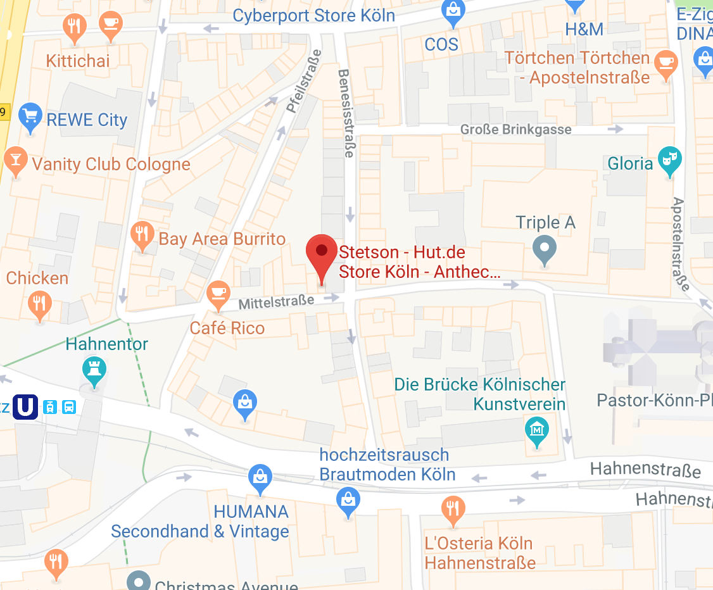

Öffnungszeiten
Montag - Freitag
11:00 - 19:00
Samstag
10:00 - 18:00
Adresse
Hut.de, Store
Köln
Mittelstr. 34
50672 Köln
Besuchen Sie uns im Hut.de Store
Köln

Gut behütet befindet sich seit September 2008 der Stetson/HUT.de Store mitten auf der Mittelstraße im trendbewussten Köln,
einer der Topadressen deutschlandweit in Sachen Mode. Wer auf der Suche nach einer exklusiven Auswahl an Hüten, Mützen und Kappen ist,
der wird hier mit Sicherheit fündig. Eine optisch klare Linie und fachkompetente sowie freundliche Mitarbeiter helfen dabei, den Hut
an den Mann und natürlich auch an die Frau zu bringen.
Die Auswahl ist riesig – von der amerikanischen Kultmarke Stetson mit den maskulin angehauchten Westernhüten und coolen Flatcaps bis hin zu Lierys mit stilechten Panamahüten oder wärmenden Strickmützen für den Winter. Die Marke Borsalino besticht durch typisch italienisches Flair und bietet von der sportlichen Basecap über den klassische Pork Pie bis hin zum Trilby aus hochwertigem Filz alles an, was in Mann und Frau Bewunderung hervorruft. Sei es für die Freizeit, die Arbeit oder aber einen förmlichen Empfang – mit dem richtigen Hut oder einer schicken Kappe wird jedem Outfit das gewisse Etwas verliehen.
Auch speziell auf die Wünsche der Frau zugeschnittene Kopfbedeckungen finden sich hier in Hülle und Fülle. Eine breitgefächerte Auswahl an femininen Glockenhüten, frechen Balloncaps oder französisch angehauchten Basken lassen jedes Frauenherz höher schlagen. Entdecken Sie die große Vielfalt an ausgewählten Marken wie bedacht, Gebeana, Bronté oder Seeberger. All diese Marken haben es sich zur Aufgabe gemacht, wunderschöne und zeitlose Hüte und Mützen für die modebewusste Frau zu entwerfen.
Egal ob neueste Mode oder doch lieber eine altbewährte und klassische Kopfbedeckung, im Stetson/HUT.de Store Köln finden Sie alles, was das Hutherz begehrt. Das vielfältige Sortiment an Hüten, Mützen und Caps wird, je nach Saison, gezielt durch stimmige Accessoires wie Schals, Tücher oder Handschuhe erweitert und bietet so nicht nur schöne und stilvolle Kopfbedeckungen, sondern gleich das Komplettpaket. Entdecken Sie Trachtenhüte aus Stroh, praktische Visoren oder coole Schiebermützen und lassen Sie sich von der Welt der Hüte verzaubern!
Die Auswahl ist riesig – von der amerikanischen Kultmarke Stetson mit den maskulin angehauchten Westernhüten und coolen Flatcaps bis hin zu Lierys mit stilechten Panamahüten oder wärmenden Strickmützen für den Winter. Die Marke Borsalino besticht durch typisch italienisches Flair und bietet von der sportlichen Basecap über den klassische Pork Pie bis hin zum Trilby aus hochwertigem Filz alles an, was in Mann und Frau Bewunderung hervorruft. Sei es für die Freizeit, die Arbeit oder aber einen förmlichen Empfang – mit dem richtigen Hut oder einer schicken Kappe wird jedem Outfit das gewisse Etwas verliehen.
Auch speziell auf die Wünsche der Frau zugeschnittene Kopfbedeckungen finden sich hier in Hülle und Fülle. Eine breitgefächerte Auswahl an femininen Glockenhüten, frechen Balloncaps oder französisch angehauchten Basken lassen jedes Frauenherz höher schlagen. Entdecken Sie die große Vielfalt an ausgewählten Marken wie bedacht, Gebeana, Bronté oder Seeberger. All diese Marken haben es sich zur Aufgabe gemacht, wunderschöne und zeitlose Hüte und Mützen für die modebewusste Frau zu entwerfen.
Egal ob neueste Mode oder doch lieber eine altbewährte und klassische Kopfbedeckung, im Stetson/HUT.de Store Köln finden Sie alles, was das Hutherz begehrt. Das vielfältige Sortiment an Hüten, Mützen und Caps wird, je nach Saison, gezielt durch stimmige Accessoires wie Schals, Tücher oder Handschuhe erweitert und bietet so nicht nur schöne und stilvolle Kopfbedeckungen, sondern gleich das Komplettpaket. Entdecken Sie Trachtenhüte aus Stroh, praktische Visoren oder coole Schiebermützen und lassen Sie sich von der Welt der Hüte verzaubern!
Durchstöbern Sie unsere verschiedenen Stores
Kaufen Sie in unserem Online-Shop ein
Gratis Versand &
Rückversand
Rückversand
1-2 Tage
Lieferzeit
Lieferzeit
100 Tage
Rückgaberecht
Rückgaberecht
Einkaufen bei HUT.de ist schnell, einfach und risikolos. Sowohl der Versand Ihrer Hüte, Mützen, Kopftücher und Kappen als
auch der Rückversand ist für Sie kostenlos.
Darüber hinaus haben Sie ein 100-tägiges Rückgaberecht auf reguläre wie auch reduzierte Ware und Sonderangebote. Für weitere Fragen stehen wir Ihnen gern per E-Mail unter fragen@hut.de zur Verfügung und sind unter der Telefonnummer 0800 4887467 (gebührenfrei aus dem deutschen Festnetz) montags bis freitags von 8.00 Uhr bis 17.00 Uhr direkt für Sie erreichbar.
Das Team von HUT.de wünscht Ihnen viel Spaß beim Einkaufen, im Webshop für den Hut, die Mütze und Kappe!
Darüber hinaus haben Sie ein 100-tägiges Rückgaberecht auf reguläre wie auch reduzierte Ware und Sonderangebote. Für weitere Fragen stehen wir Ihnen gern per E-Mail unter fragen@hut.de zur Verfügung und sind unter der Telefonnummer 0800 4887467 (gebührenfrei aus dem deutschen Festnetz) montags bis freitags von 8.00 Uhr bis 17.00 Uhr direkt für Sie erreichbar.
Das Team von HUT.de wünscht Ihnen viel Spaß beim Einkaufen, im Webshop für den Hut, die Mütze und Kappe!